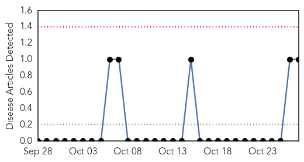
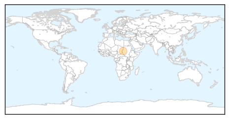
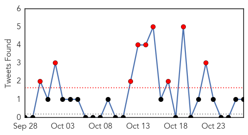

Hemmorhagic Fever
30-Day Web Trend
0 alerts, 0 warnings

30-Day Twitter Trend
0 alerts, 0 warnings

Article Locations
Article Confidences

Top Articles:
Top Tweets:
-
No tweets found for Oct 27, 2015
Cholera
30-Day Web Trend
4 alerts, 0 warnings

30-Day Twitter Trend
9 alerts, 0 warnings

Article Locations

Article Confidences
Top Articles:
- 0.997
- Cholera spreading in Iraq, suspected case reported in Syria – UN health agency
- 0.990
- Cholera fears for Iraq and Syria
- 0.946
- Cholera 'epidemic spreading' in Syria: experts
- 0.923
- Cholera 'epidemic spreading' in Syria, says expert
- 0.863
- Mutebile: Public-Private Partnerships Will Fuel Financial Sector Dev’t
- 0.863
- MTN Rwanda, M-Pesa Seal Deal on Mobile Money
- 0.863
- FEATURE: Blogging on a Steady Rise in Uganda
- 0.859
- ECHO increases support to health programmes in Iraq providing life-saving care to hundreds of thousands of people affected by the conflict. - Iraq
- 0.823
- Experts decry lack of data on food-poisoning
- 0.782
- Two studies investigate health impacts of continuous piped water supply
- 0.526
- Zanetor Rawlings health screening laudable - Residents
Top Tweets:
- 0.771
- Have you read about the Cholera outbreak in Syria? https://t.co/gQj7XNPWbh